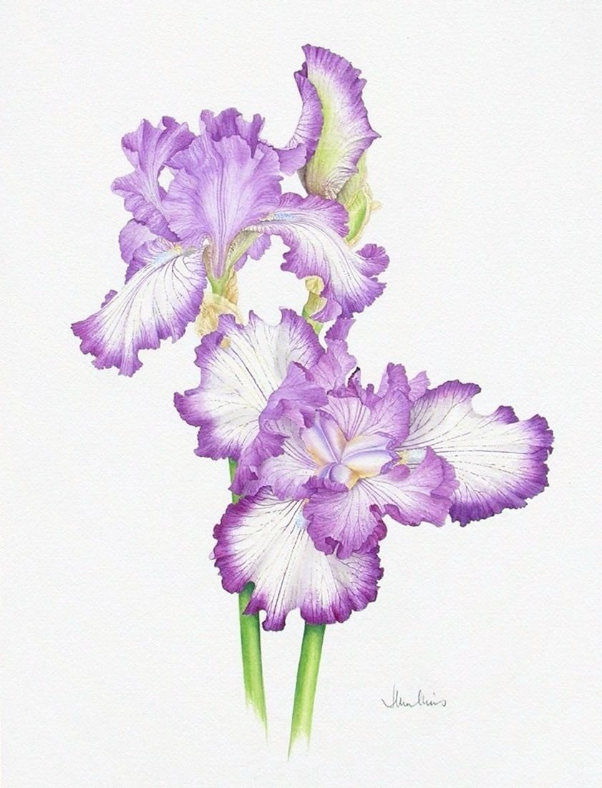

Pale Mauve Bearded Irises
No. 56- Medium
- Watercolour on paper
- Size
- 47 × 35 cm
- Year
- 1990s
- Price
- £200
These large flowers are beautiful in their colouring and complexity. They were painted from life and are life-sized.
Ask about this paintingOr email enquiries@joanmullinsart.co.uk, quoting No. 56. UK only. Collection from Nantwich is free; UK postage is quoted when you enquire.


 Autumn Fruits
Autumn Fruits Two Magenta and Pink Bearded Irises
Two Magenta and Pink Bearded Irises Summer roses
Summer roses